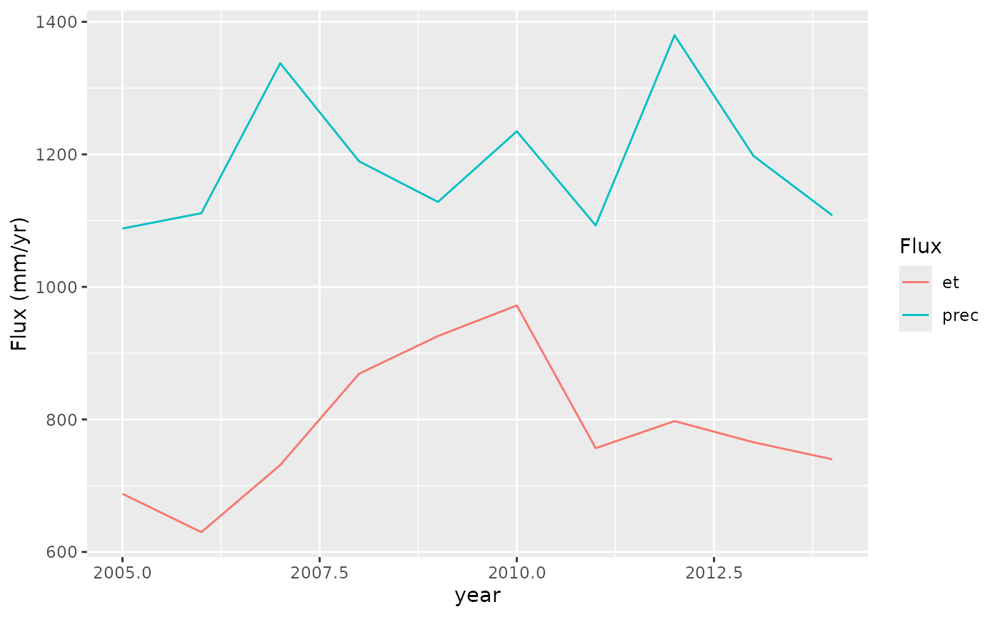
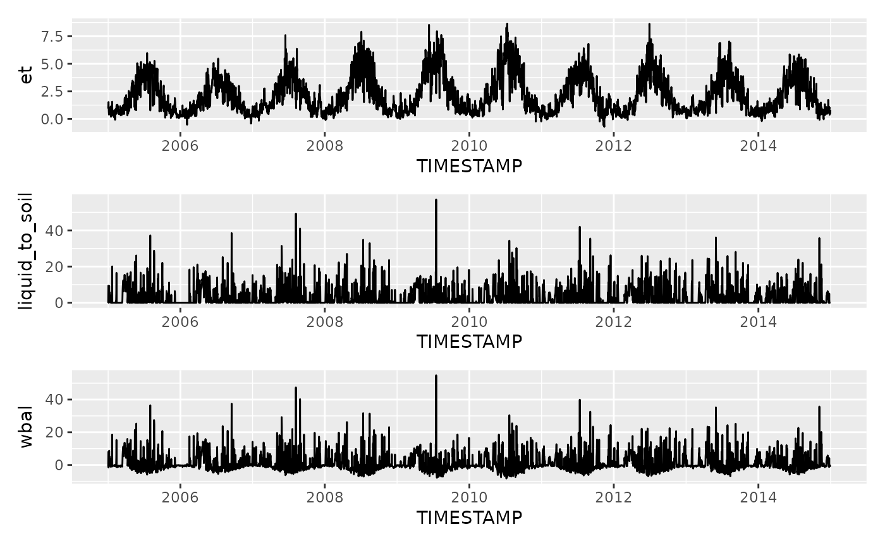
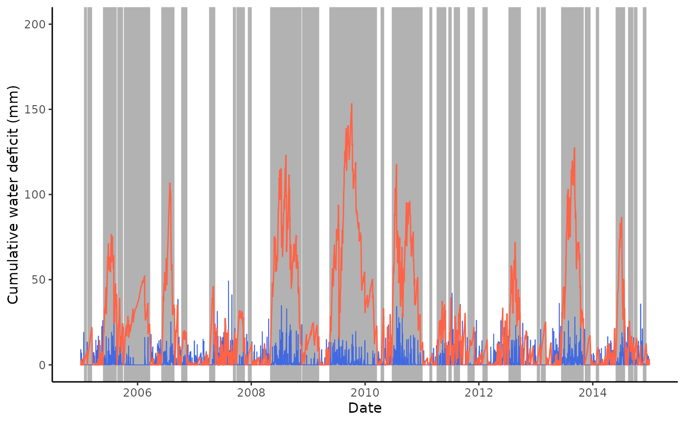
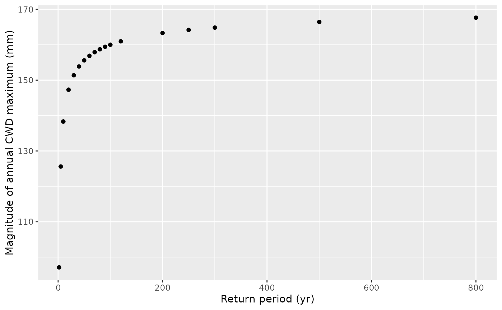

##
## Attaching package: 'dplyr'## The following objects are masked from 'package:stats':
##
## filter, lag## The following objects are masked from 'package:base':
##
## intersect, setdiff, setequal, union## here() starts at /home/runner/work/cwd/cwd##
## Attaching package: 'lubridate'## The following objects are masked from 'package:base':
##
## date, intersect, setdiff, union## Loading required package: Lmoments## Loading required package: distillery##
## Attaching package: 'extRemes'## The following objects are masked from 'package:stats':
##
## qqnorm, qqplotThis demonstrates the workflow for determining cumulative water deficit (CWD) time series and fitting an extreme value distribution to annual maxima of the CWD time series.
Convert ET to mass units
Convert latent heat flux to evapotranspiration in energy units.
df <- df |>
mutate(et = cwd::convert_et(LE_F_MDS, TA_F_MDS, PA_F))Check annual totals.
adf <- df |>
mutate(year = year(TIMESTAMP)) |>
group_by(year) |>
summarise(et = sum(et), prec = sum(P_F))
adf |>
ggplot(aes(x = year)) +
geom_line(aes(y = et), color = "tomato") +
geom_line(aes(y = prec), color = "royalblue")
Simulate snow
Simulate snow accumulation and melt based on temperature and precipitation.
df <- df |>
mutate(prec = ifelse(TA_F_MDS < 1, 0, P_F),
snow = ifelse(TA_F_MDS < 1, P_F, 0)) |>
cwd::simulate_snow(varnam_prec = "prec", varnam_snow = "snow", varnam_temp = "TA_F_MDS")Define water balance liquid water to soil (rain plus snow melt) minus ET in mass units.
df <- df |>
mutate(wbal = liquid_to_soil - et)Visualise it.
gg5 <- df |>
ggplot(aes(TIMESTAMP, et)) +
geom_line()
gg6 <- df |>
ggplot(aes(TIMESTAMP, liquid_to_soil)) +
geom_line()
gg7 <- df |>
ggplot(aes(TIMESTAMP, wbal)) +
geom_line()
gg5 / gg6 / gg7
Cumulative water deficit algorithm
Get CWD and events.
out_cwd <- cwd(df,
varname_wbal = "wbal",
varname_date = "TIMESTAMP",
thresh_terminate = 0.0,
thresh_drop = 0.0)Retain only events of a minimum length of 20 days.
out_cwd$inst <- out_cwd$inst |>
filter(len >= 20)Plot CWD time series.
ggplot() +
geom_rect(
data = out_cwd$inst,
aes(xmin = date_start, xmax = date_end, ymin = -99, ymax = 99999),
fill = rgb(0,0,0,0.3),
color = NA) +
geom_line(data = out_cwd$df, aes(TIMESTAMP, prec), size = 0.3, color = "royalblue") +
geom_line(data = out_cwd$df, aes(TIMESTAMP, deficit), color = "tomato") +
coord_cartesian(ylim = c(0, 200)) +
theme_classic() +
labs(x = "Date", y = "Cumulative water deficit (mm)")## Warning: Using `size` aesthetic for lines was deprecated in ggplot2 3.4.0.
## ℹ Please use `linewidth` instead.
## This warning is displayed once every 8 hours.
## Call `lifecycle::last_lifecycle_warnings()` to see where this warning was
## generated.
Extreme value statistics
Get annual maxima
vals <- out_cwd$inst %>%
group_by(year(date_start)) %>%
summarise(deficit = max(deficit, na.rm = TRUE)) %>%
pull(deficit)
# Fit general extreme value distribution
evd_gev <- extRemes::fevd(x = vals, type = "GEV", method = "MLE", units = "years")
summary(evd_gev)##
## extRemes::fevd(x = vals, type = "GEV", method = "MLE", units = "years")
##
## [1] "Estimation Method used: MLE"
##
##
## Negative Log-Likelihood Value: 49.54513
##
##
## Estimated parameters:
## location scale shape
## 84.6508077 36.6445511 -0.4138389
##
## Standard Error Estimates:
## location scale shape
## 13.2419143 10.3164770 0.2916536
##
## Estimated parameter covariance matrix.
## location scale shape
## location 175.348294 -1.869928 -1.80581691
## scale -1.869928 106.429698 -2.10399737
## shape -1.805817 -2.103997 0.08506182
##
## AIC = 105.0903
##
## BIC = 105.998Get return levels for given return periods.
return_period <- c(2, 5, 10, 20, 30, 40, 50, 60, 70, 80, 90, 100, 120, 200, 250, 300, 500, 800)
return_level <- extRemes::return.level(
evd_gev,
return.period = return_period
)
df_return <- tibble(
return_period = return_period,
return_level = unname(c(return_level)),
trans_period = -log( -log(1 - 1/return_period)) )
# visualise the estimated event size with a return period of $T = 20$ y on top
# of the distribution of cumulative water deficit events.
ggplot() +
geom_histogram(
data = out_cwd$inst,
aes(x = deficit, y = ..density..),
color = "black",
position="identity",
bins = 6
) +
labs(x = "Cumulative water deficit (mm)") +
geom_vline(xintercept = df_return %>%
dplyr::filter(return_period == 20) %>%
pull(return_level),
col = "tomato")## Warning: The dot-dot notation (`..density..`) was deprecated in ggplot2 3.4.0.
## ℹ Please use `after_stat(density)` instead.
## This warning is displayed once every 8 hours.
## Call `lifecycle::last_lifecycle_warnings()` to see where this warning was
## generated.